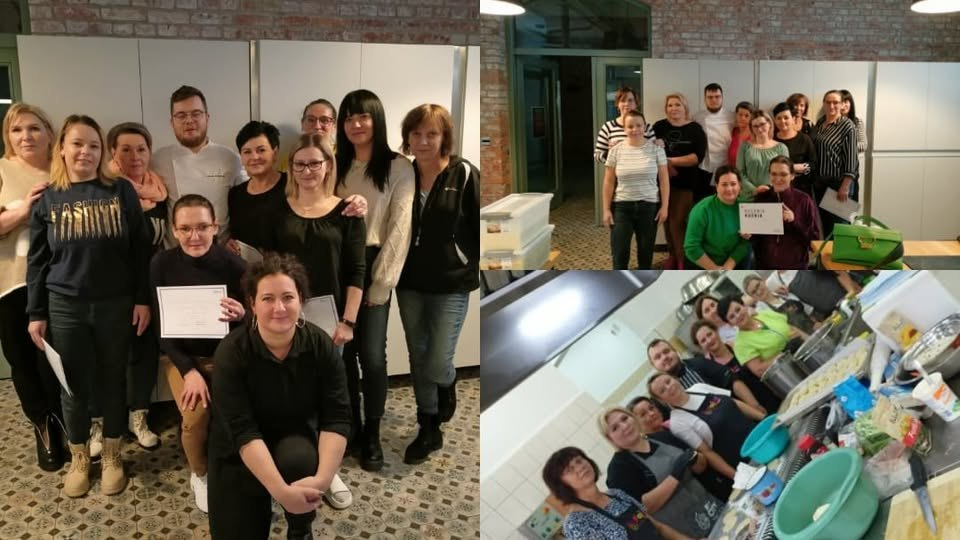
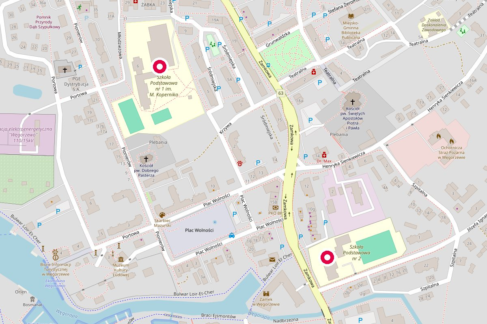

Domowe obiady i catering w Węgorzewie
Gotujemy dla szkół, dla mieszkańców i na Wasze uroczystości. Obiady abonamentowe, catering na różne okazje i codzienne obiady dla dzieci w szkołach podstawowych nr 1 i nr 2.
Spółdzielnia socjalna · ul. Pionierów 6 i ul. Zamkowa 6
Co dla Was przygotujemy
Wszystko gotujemy na miejscu, w naszych kuchniach w Węgorzewie.


Obiady szkolne - informacje dla rodziców
W roku szkolnym 2025/2026 prowadzimy stołówki w Szkole Podstawowej nr 1 i nr 2 w Węgorzewie. Codziennie gorący obiad dwudaniowy, do tego deser i napój. Jadłospis i informacja o alergenach wiszą na tablicy przy stołówce.
Kartę zgłoszenia na obiady dostaniesz w kuchni i w sekretariacie szkoły.
- Cena
- 7,90 zł za obiad ucznia
- Płatność
- Przelewem za cały miesiąc, do 10. dnia miesiąca. W tytule: imię i nazwisko dziecka, klasa i numer szkoły.
- Nieobecność
- Zgłoś do 15:00 dnia poprzedniego: SMS na 533 750 426 albo e-mail. Kwotę odliczymy w następnym miesiącu.
- Wydawanie
- 11:35-14:30, najpierw klasy I-III, od 12:35 klasy V-VIII

Spółdzielnia socjalna, czyli ludzie stąd
Gotujemy od września 2022 roku. Spółdzielnię założyły Gmina Węgorzewo i Stowarzyszenie „Perła”, a od 2023 roku mamy status przedsiębiorstwa społecznego. Praca w naszej kuchni daje stały dochód i zawód osobom, które wracają na rynek pracy.
Szkolimy się z zawodowym kucharzem, a zysk wraca do zespołu i do lokalnej społeczności. W 2024 roku przygotowywaliśmy około 800 posiłków dziennie, głównie dla dzieci szkolnych i przedszkolnych.
- Przedsiębiorstwo Społeczne Roku 2024nagroda na Gali Ekonomii Społecznej w Olsztynie
- Znak „Zakup Prospołeczny”dla naszego cateringu z obiadami jak u babci
- 100% polecaw opiniach na Facebooku

Zamów obiad albo catering
Najszybciej telefonicznie. Na zapytania o catering odpowiadamy też mailowo.
533 303 927fajnaitwoja@gmail.com
Stołówki szkolne (nieobecności): 533 750 426

© OpenStreetMap